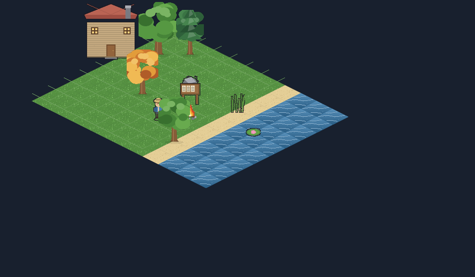
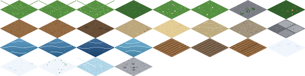
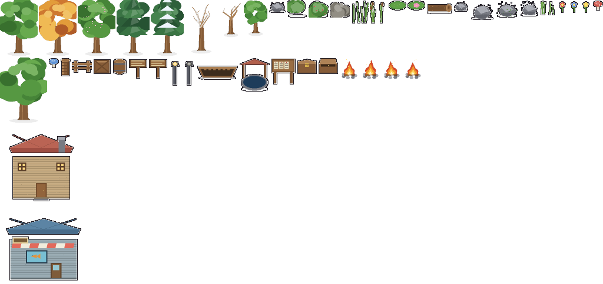
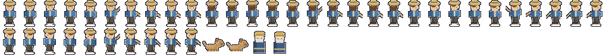
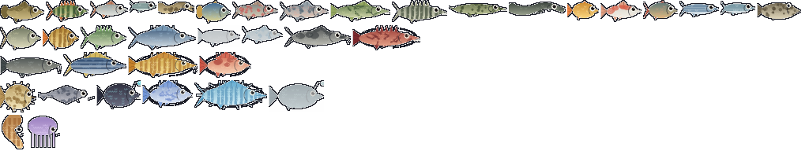
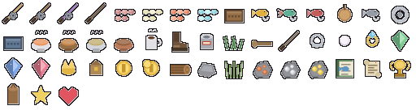
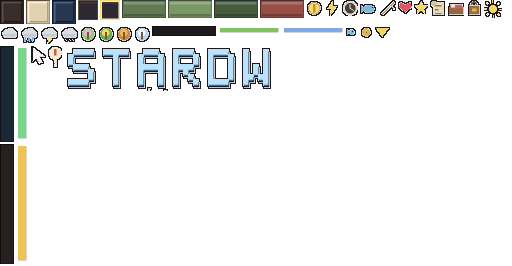
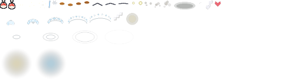

Вся графика и звук сгенерированы процедурно (tools/gen_assets.py, tools/gen_audio.py).








Анимации: walk/idle/cast/hold/reel x4 направления, костёр, всплески, рябь, листья, птицы, светлячки.